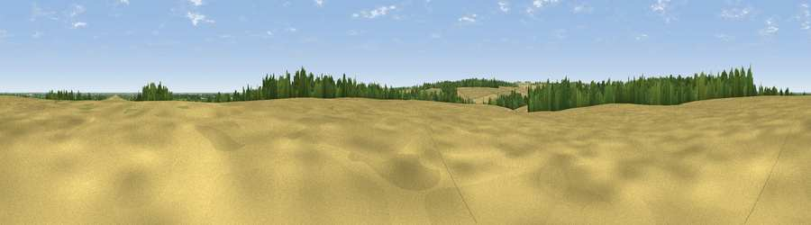

Viewpoint near Aby
#35535 in England · top 71% of its area beats it · near AbyThe view, rendered

A 360° render of this exact spot computed from the terrain model, tree cover and land cover — summer colours, afternoon light, calibrated against photographs of famous viewpoints. Real trees, hedges and buildings will differ in detail.
The panorama
Grey silhouette: terrain skyline in each direction (720 bearings, Earth curvature and refraction included). Dashed green: skyline with trees (+15 m) and buildings (+8 m) as obstacles. Blue strip: how far the ground is visible on each bearing.
Where the view opens
Wedge length = distance to the farthest visible ground on that bearing (vegetation-aware). Rings at 10, 25 and 50 km.
What fills the view
77% cropland · 14% woodland · 8% grassland ·
Angular shares of the visible panorama (visual magnitude), not map area. Landscape diversity 0.32 (0–1 Shannon).
Key numbers
More beautiful places nearby
The staircase of upgrades: each row has a higher view potential than everything closer. Driving times are estimates from straight-line distance, calibrated against real road routing — check an actual route before setting out.
| Place | Direction | Drive | Score |
|---|---|---|---|
| Viewpoint near Aby | S · 2 km | ~6 min | 42.0 |
| Meagram Top | SE · 2 km | ~6 min | 48.8 |
| Kenwick Bar | NW · 6 km | ~13 min | 51.3 |
| Viewpoint near Tetford | SW · 6 km | ~13 min | 58.0 |
| Warden Hill | SSW · 7 km | ~15 min | 59.5 |
| Viewpoint near East Keal | S · 16 km | ~28 min | 66.0 |
| Viewpoint near Claxby | WNW · 30 km | ~47 min | 71.5 |
| Garrowby Hill (A166 crest) | NW · 95 km | ~120 min | 71.9 |
53.30169, 0.06468 · source: osm peak · position refined by local search. Computed location — check access rights before visiting.